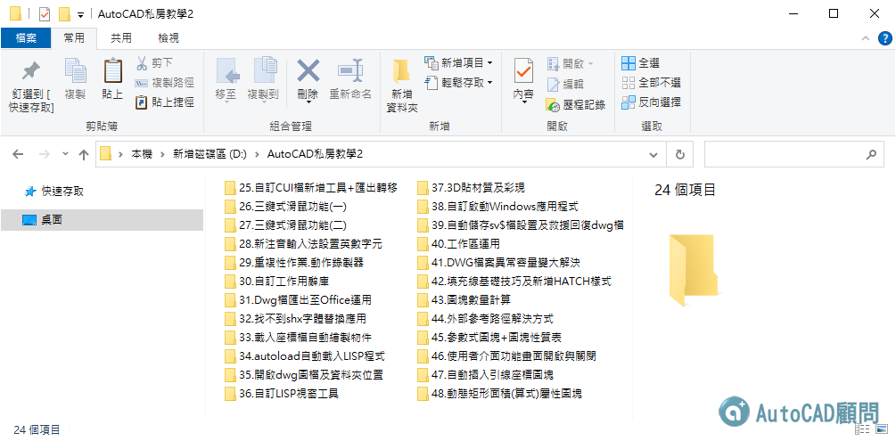

大家好：
號外！【2021私房教學2】課程全新到貨囉！
📀訂購光碟課程的朋友，我們將陸續寄送作業，請留意郵差來按鈴(線上課程)。
🎞加入線上課程的朋友，我們將陸續開通影片，請留意論壇信件通知(線上課程)。
😁提升CAD戰鬥力必備良藥😁
🎀 蘋果爸教學課程訂購中 🎀
👉 (點我選購光碟課程) 👈 👉 (點我選購線上課程) 👈
😺這次私房教學2課程，影片時間約有520分鐘，第二集一樣給大家滿滿知識收穫，請多多支持響應及分享給您的朋友...感恩!
想訂購或想了解私房課程的朋友，請隨時提出來討論及交流吧~
▼函授教學主題：AutoCAD 2021 私房教學2_光碟課程/線上課程
介紹：2021全新二十四道私房教學第二集，影片課程內容涵蓋範圍多元設計。透過蘋果爸獨家私房影音教學影片，有效滿足工作中或學習上的需求。
教授軟體為AutoCAD 2020/2021版本，使用AutoCAD 2010至AutoCAD 2024版本均可適用！
因為課程教授的基礎觀念及步驟作法都是通用的，這一點請大家放心，有學習疑慮隨時上「顧問論壇」或「FB社團」提問。光碟內含「DWG範例」、「筆記重點整理」及「論壇網頁主題說明」。
作者：Tiger&蘋果爸
版本：AutoCAD 2020/2021
光碟：中文影音教學
規格：1 套（一片DVD光碟），私房教學2課程共計二十四道私房教學經典之術(約520分鐘)，附有DWG範例供操作練習，還有相關教學文件筆記及論壇網頁主題說明。
影片：光碟內附CadPlayer播放程式（僅適用微軟作業系統）。線上影片課程需綁定Google帳號（Gmail）。
光碟課程售價：NT1800元
線上課程售價：NT1600元
出版日期： 2021年8月初
選購課程：👉 https://autocad-tw.1shop.tw/kcb8mg 👈


😎工程繪圖常常會用到型鋼，每次都要查表格再來繪製圖塊，這個動作非常費時，現在透過參數式設計結合圖塊表格功能，即可滿足工作需要隨時變換型鋼尺寸，此範例不需要程式基礎，各位有機會可以來試試製作符合工作的圖塊吧!
😁AutoCAD最強項的並不是單一指令功能使用，而是如何有效結合指令功能(相輔相成)，也就是所謂的技巧搭配(密技)，可讓整個功能有放大加乘效果，學會了解運用可以讓工作效率大躍進喔!
說明十三種以上指令功能組合操作:
圖塊編輯器(Bedit)、屬性定義(Attdef)、功能變數(Field)、動態圖塊(Block)、線性參數(BParameter)、拉伸動作(BActionTool)、插入圖塊(Insert)、製作圖塊(Wblock)、單位(Units)、點型式(Ptype)、圖塊比例BSCALE(Express Tool)、標柱比例係數DIMSCALE(系統變數)、AutoLisp程式
😊AutoCAD最方便的功能就是可幫你算面積，透過電腦繪圖計算快又準，這次來搭配【屬性圖塊+功能變數+表格】，讓我們快速取得面積算式等數據，即可實現半自動化的面積計算顯示，大大省下繁瑣步驟及工作時間!
🎀 私房教學2 課程訂購中 👉 https://autocad-tw.1shop.tw/kcb8mg 👈